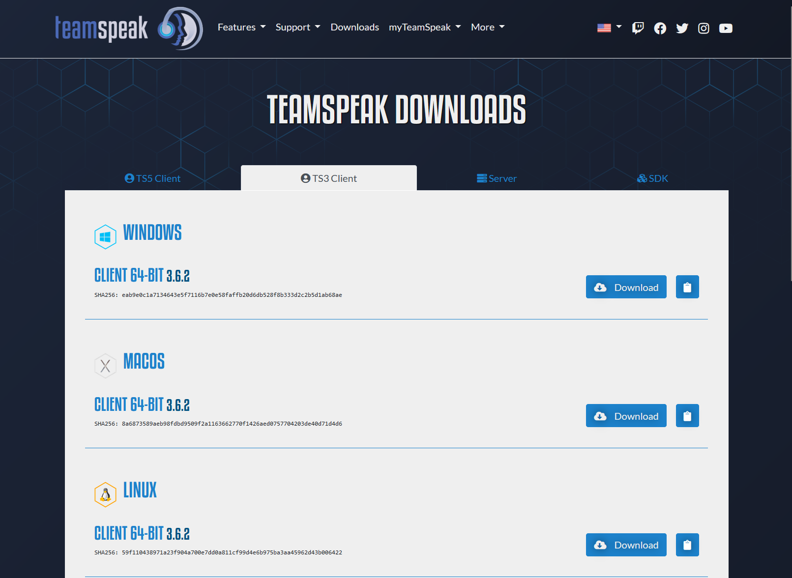

TeamSpeak Installation Schritt-für-Schritt
Folge diesen Schritten, um TeamSpeak auf deinem Computer zu installieren.
Schritt 1: Download
Lade die neueste Version von TeamSpeak Client 3 auf der offiziellen Webseite herunter. Achte dabei unbedingt, ob du den TS5 oder TS3 Client installierst.
Download TeamSpeak Schritt 2: Installation
Starte die heruntergeladene Installationsdatei und folge den Anweisungen des Installationsassistenten. Achte darauf, die richtigen Optionen auszuwählen.
Schritt 3: Erste Schritte
Nach der Installation öffne TeamSpeak und konfiguriere deine Einstellungen. Du wirst aufgefordert, ein Profil zu erstellen und dich mit dem Server zu verbinden.
Schritt 4: SaltyChat installieren
Schließe zunächst dein TeamSpeak und starte die Installation der SaltyChat-Version 3.1.2. Folge auch hier den Anweisungen des Installationsassistenten.

Schritt 5: SaltyChat konfigurieren
Gehe nach der Installation zu den TeamSpeak-Plugins und aktiviere das SaltyChat Plugin. Starte TeamSpeak danach neu, um sicherzustellen, dass alles korrekt eingerichtet ist.
Schritt 6: Verbindung herstellen
Verwende die Adresse des Coastal City-Servers, um dich mit dem TeamSpeak-Server zu verbinden.
Schritt 7: Beitreten und Spaß haben!
Tritt den verfügbaren Channels bei und genieße das immersive RP-Erlebnis mit SaltyChat.